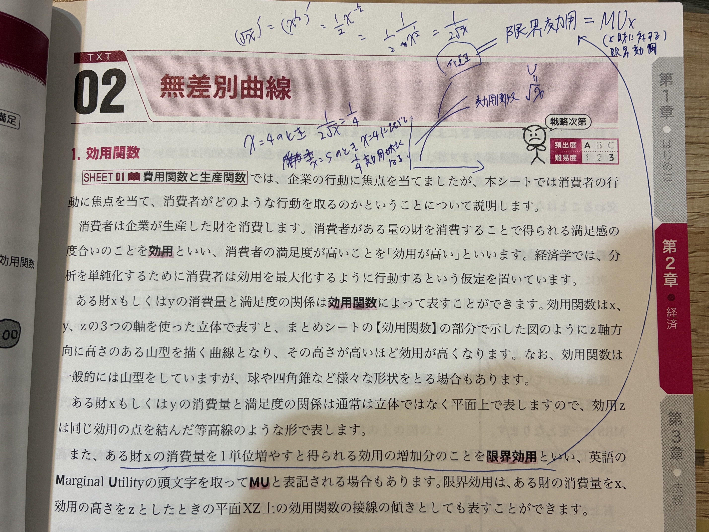
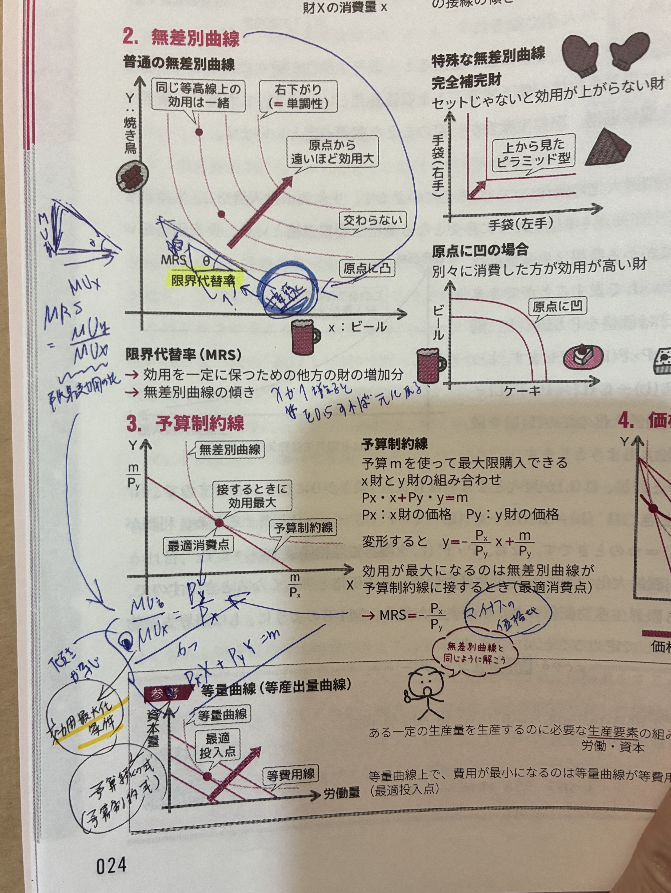

🐣 「うれしさ」を数字にする話
🐣 つかみ
- 効用 U＝消費者の満足度。多く消費するほど大きくなる。
- 限界効用 MU＝1単位多く消費したときの「追加分のうれしさ」。
- 無差別曲線＝「同じうれしさになる組合せ」を結んだ線。

🌱 効用関数と無差別曲線の関係
効用関数 U の例
消費量 x の関数として書くと、よく使われるのが U = √x。
x=1 → U=1、x=4 → U=2、x=9 → U=3。
「増えるけど、増え方は段々鈍る」 ＝限界効用逓減の典型。
🌐 3D効用関数のイメージ
X財・Y財・効用Uの3軸で表すと「山型の曲面」になる。原点から離れるほど高い（効用大）。
平面に投影して同じ高さの等高線を引いたものが「無差別曲線」。山を上から見たイメージ。
限界効用 MU の意味
MU = Marginal Utility。X財に関する限界効用は MUx。
数学的には効用関数 U を x で微分したもの = U'(x)。U(x)曲線の接線の傾き。
無差別曲線とは
X財とY財の組合せを平面に描き、同じ効用になる点を結んだ曲線。
通常は原点に対して凸（右下がり）の形。
- 右上ほど効用大（U₁ < U₂ < U₃）
- 同じ曲線上ならどの点でも満足度は同じ
📘 効用関数・限界効用の計算
🔢 √xの微分（基本中の基本）
📘 無差別曲線の3つの性質
| 性質 | 意味 |
|---|---|
| 右下がり（単調性） | X財を増やすならY財を減らす必要がある |
| 原点に対して凸 | 偏った消費より、両方バランスよく消費する方が満足 |
| 交わらない | 効用水準が同時に2つになることはない |

📘 限界代替率（MRS）
MRS = Marginal Rate of Substitution
無差別曲線上で、X財を1単位増やしたときに諦めるY財の量。
数式では無差別曲線の接線の傾きの絶対値。
📌 導出の直観：効用が一定（dU=0）のとき、MUx·dX + MUy·dY = 0 → -dY/dX = MUx/MUy。
数式で：|ΔY₁/ΔX₁| > |ΔY₂/ΔX₂|（X財が増えるほど、諦めるY財は少なくなる）
🔍 特殊な無差別曲線

① 完全補完財（L字型・レオンチェフ型）
📦 セットで初めて意味がある財
X財とY財を 固定比率（α:β） でしか使わない財。少ない方が増えなければ効用は上がらない。
無差別曲線は L字型。各L字の角を結ぶ線（射影線）が最適消費の通り道。
具体例：右手の手袋と左手の手袋（1:1）、車とガソリン、CDとプレイヤー、コーヒーと砂糖（決まった比率）
② 完全代替財（直線）
🔄 1単位どうしが完全に置き換え可能
X財α個とY財β個が完全に同じ価値。MRSは 常に一定（α/β）。
→ 無差別曲線は 直線。
具体例：コーラとペプシ、500円玉2枚と1000円札1枚、同質農産物
IC が直線（MRS一定）なので、予算線との「傾きの大小」だけで結論が決まる：
- 予算線が 急（Pxが相対的に高い）→ Xを切り捨て、Yを買えるだけ買う
- 予算線と IC の傾きが 一致（Px/Py = MRS）→ 線上の どの点でも同じ満足度
- 予算線が 緩（Pyが相対的に高い）→ Yを切り捨て、Xを買えるだけ買う
📌 完全代替では「価格比 vs MRS」で 角点解（一方に全振り）になることが多い。両者一致のときだけ任意点解。
③ 原点に凹（凸性が崩れる特殊例）
🍺 「ばらつき」より「集中」が嬉しい財
両方少しずつより、どちらか一方に集中した方が満足度が高い財。
無差別曲線は 原点に対して凹（外側に膨らむ）。MRSは 逓増。
具体例：ビールとカレー、ご飯とパスタ（同時に食べると満足度逆に↓）、ロックとクラシック音楽
📐 4形状の総括対応表
| 形状 | 効用関数 | MRS | 最適消費点 | 例 |
|---|---|---|---|---|
| 原点に凸（標準） | U=X^a·Y^b（コブ＝ダグラス型） | 逓減 | 内点（接点） | 普通の財 |
| L字型（完全補完） | U=min(αX,βY)（レオンチェフ） | 不連続 | L字の角 | 左右の靴 |
| 直線（完全代替） | U=αX+βY（線形） | 一定 | 角点解 or 任意点 | コーラ↔ペプシ |
| 原点に凹 | U=X²+Y² など | 逓増 | 角点（軸上） | ビール↔カレー |
📐 無差別曲線の形と効用関数の対応
| 形状 | 効用関数 | MRS | 例 |
|---|---|---|---|
| 原点に凸（標準） | U=X^a·Y^b など | 逓減 | 普通の財 |
| L字型（完全補完） | U=min(αX,βY) | 不連続 | 左右の靴 |
| 直線（完全代替） | U=αX+βY | 一定 | コーラ↔ペプシ |
| 原点に凹 | U=X²+Y² など | 逓増 | ビール↔カレー |
🔍 効用最大化の条件
📐 接点条件（最重要）
予算制約線と無差別曲線の 接点 で効用最大化。
そこでは「無差別曲線の傾き＝予算制約線の傾き」が一致する。
- 緑の直線＝予算制約線（買える限界）
- 赤い実線（太）＝最適となる無差別曲線 U₂（予算線と接する）
- 赤い破線＝より高い効用 U₃（予算オーバーで到達不可）
- 薄い赤線＝低い効用 U₁（予算内だが U₂ より満足度低い）
- ⭐青い丸＝予算線と U₂ の接点＝最適消費 (X*, Y*)
- 青い破線＝最適消費量 X* と Y* の値を読み取る補助線
💡 加重限界効用均等の法則（補足）
効用最大化条件 MRS = MUx/MUy = Px/Py を変形すると：
直観：もし MUx/Px > MUy/Py なら、Y財の支出をX財に振り替えれば追加効用が増える。逆も然り。両辺が等しくなるところで「これ以上振り替えても得しない」＝最適。
この法則は「加重」（重みを付けて＝価格で割って）「限界効用が均等」になる、という意味。
🔍 生産者側の応用：等産出量曲線
労働市場における類似構造
- 等量曲線（等産出量曲線）＝同じ生産量を実現する労働Lと資本Kの組合せ（無差別曲線に対応）
- 等費用線＝同じ総費用で雇える労働と資本の組合せ（予算制約線に対応）
- 最適投入点＝等量曲線と等費用線の接点
消費者理論の 無差別曲線×予算制約 → 接点で最適 が、生産者理論では 等量曲線×等費用線 → 接点で最適 に対応する完全な双対関係。
📌 用語対応表：消費者：MRS=MUx/MUy=Px/Py ⇔ 生産者：MRTS=MPL/MPK=w/r（要素価格比）
✍️ ノートの青文字・手書きメモ（重要）
IMG_2393：MRSの数式定義
- MRS = Marginal Rate of Substitution（英語フルネーム）
- 傾き = 限界代替率 = ΔY/ΔX = MUx/MUy
- 限界代替率逓減：|ΔY₂/ΔX₂| > |ΔY₁/ΔX₁|（X財が小さい領域ほど傾きが急）
- 無差別曲線 U₁,U₂,U₃ → 上から順に効用大
- 効用関数の例 U=√x
IMG_2406：最適消費点の青文字
- 右下がり = 単調性
- 同じ等高線上の効用は一緒
- 最適消費点（接点）：MUx/MUy = Px/Py（青で大きく囲み）
- 労働市場：等量曲線（等産出量曲線）／等費用線（等出力線）／最適投入点
- 黄色マーカー：限界代替率（重要強調）
IMG_2407：限界効用と微分公式
- 限界効用 = MUx（X財に対する限界効用）
- 効用関数 U = √x
- 微分公式：(√x)' = (x^(1/2))' = (1/2)·x^(-1/2) = 1/(2√x)
- 具体計算：x=4 のとき MUx = 1/(2·2) = 1/4
- 効用最大化条件：MRS = Px/Py（接点で予算制約と無差別曲線が接する）
- 限界代替率＝MUx/MUy（限界効用の比）
- 限界代替率逓減：曲線が原点に凸であることの数学的表現
- U=√x の微分：MUx=1/(2√x)（試験頻出パターン）